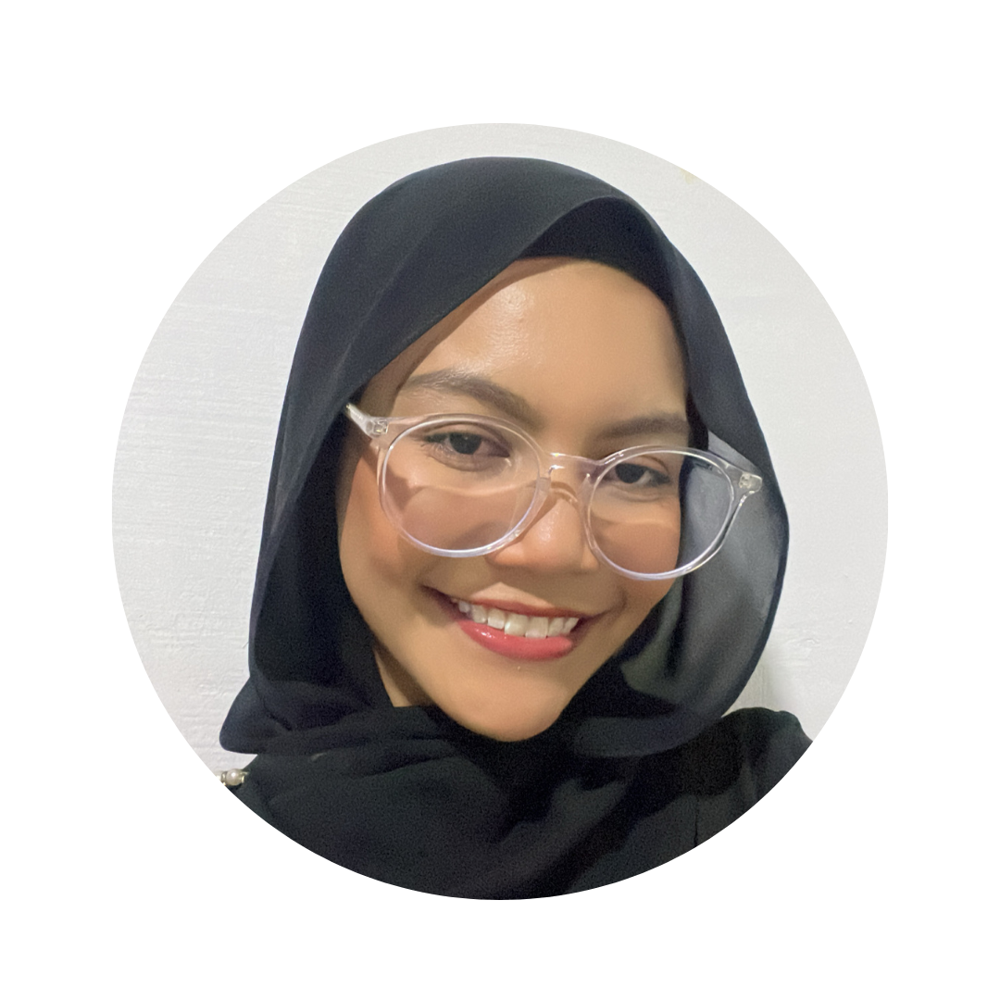

Thufailah Ridzwan

Professional Summary
Reliable educator committed to providing students with essential skills to achieve academic goals while instilling the love of learning.
Education
- Bachelor of Arts, English Literature and Communications & New Media - National University of Singapore (2020-2023)
- GCE A Levels - Millennia Institute (2017-2019)
Work Experiences
-
Home-based Tuition, Part-time Tutor
Mar 2019 - Present
- Conducted and faciliated English, Maths and Science lessons for Primary and Secondary students with improved grades by at least 2 bands
- Enhanced students' learning through fun experiments and strategies to strengthen understanding of core concepts
-
Raffles Hospital, Full-time Administrative Assistant
Nov 2016 - Jan 2017
- Assisted with shelving of medical reports and accomplished other administrative duties promptly
- Scanned weekly invoices and analysed details of data entry meticulously
Co-curricular Activities And Volunteer Experiences
-
NUS Dikir Barat, Captain
Aug 2021 - Aug 2022
- Instilled a sense of belonging and increased the awareness of Dikir Barat as a Malay performing art
- Interacted with event officials and provided opportunities for the team to perform, boosting their confidence levels
-
NUS Literary Society, Publicity Director
Jan 2022 - Aug 2022
- Cultivated and maintained relationships between the CCA and the student body through consistent trust and quality of work
- Created creative and original publicity materials to increase visibility of the CCA and its events, ensuring close attention to detail
-
ONYX House Exco, Member
Oct 2018 - Mar 2019
- Revamped and conceptualized house cheers, dance and t-shirts and presented to captains
- Incorporated an enriching experience for a group of 18 dances by enhancing sense of belonging and contributing to the showcase
Skills
- Languages: Proficient in both written and spoken English and Malay, fluent in conversational French
- Technical Skills: Proficient in Microsoft office (Word, Excel and Powerpoint), Adobe Illustrator and Photoshop, 3D Blender, Clerical skills (Knowledge in InfoGenesis)
- Soft skills: Customer service, multi-tasking, storytelling, problem solving and team player
Other